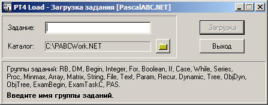
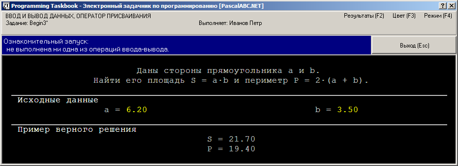
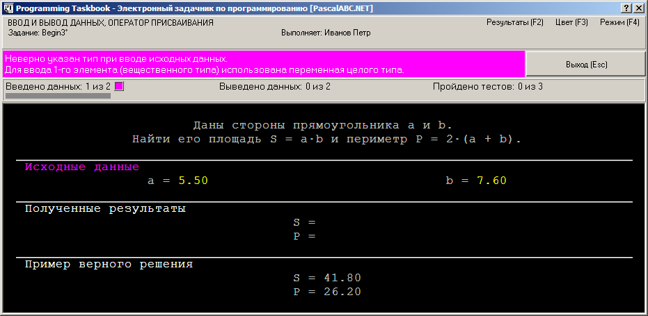
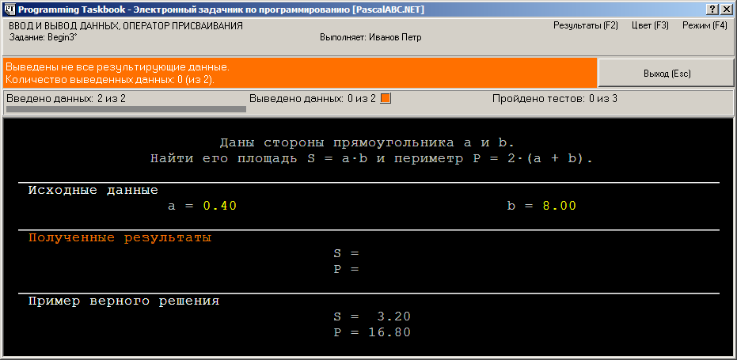
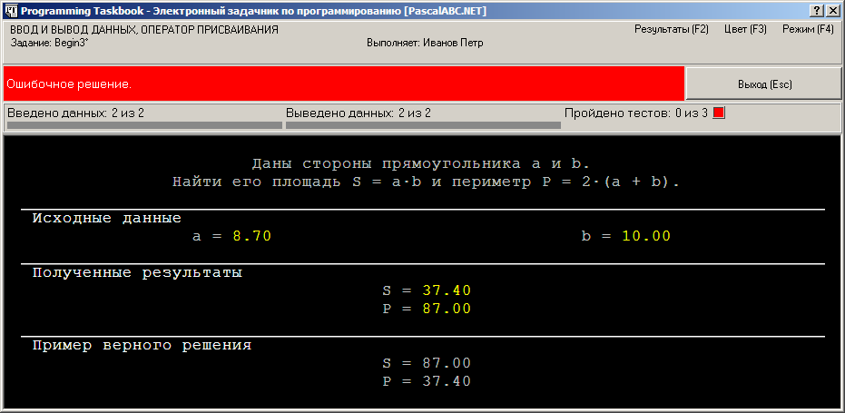
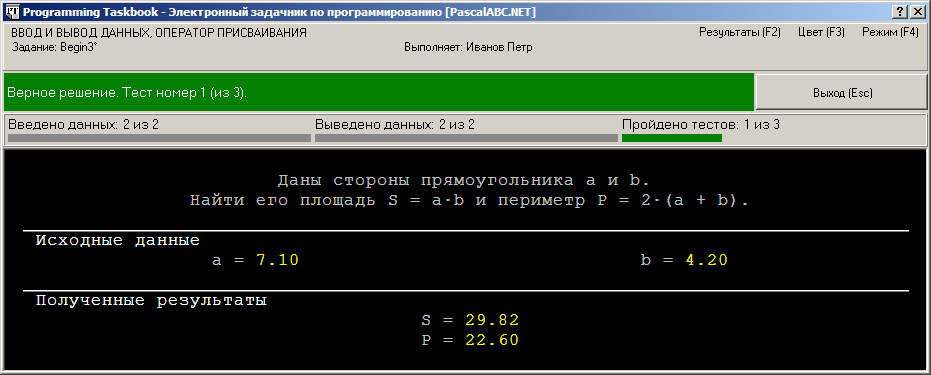
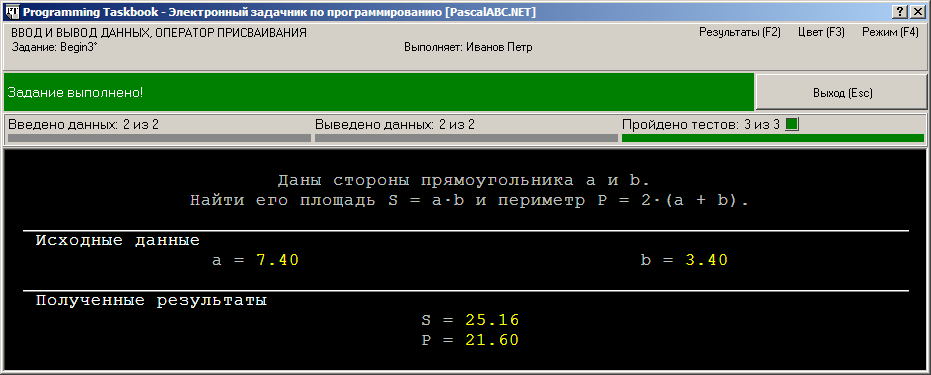

Задание Begin3 относится к самой первой группе задачника, посвященной знакомству с вводом-выводом и оператором присваивания. Приведем формулировку этого задания.
Begin3. Даны стороны
прямоугольника a и b.
Найти его площадь S=a*b и периметр P=2*(a+b).
Далее по шагам опишем сценарий выполнения задания в системе PascalABC.NET.
Шаг 1. Для
выполнения заданий из электронного задачника подключим к программе модуль
PT4 и вызовем в
начале программы процедуру Task, передав ей в
качестве параметра имя задания:
uses PT4;
begin
Task('Begin3');
end.
Заметим, что эту программу не обязательно набирать вручную. Для автоматической генерации данной программы
выполним следующие действия. Нажмем кнопку
 . На экране появится окно
программного модуля PT4Load, позволяющего создать программу-заготовку для требуемого задания:
. На экране появится окно
программного модуля PT4Load, позволяющего создать программу-заготовку для требуемого задания:

Наберем в поле ввода «Задание»
текст Begin3 и нажмем Enter.
После этого указанный выше текст сгенерируется автоматически и сохранится в
файле Begin3.pas в рабочем каталоге
системы PascalABC.NET
(по умолчанию это каталог C:\PABCWork.NET).
Запустим программу (нажав клавишу F9), чтобы увидеть на экране текст задания:

Запуск нашей программы был признан ознакомительным (и поэтому правильность решения не анализировалась), так как в ходе ее выполнения не было совершено ни одной операции ввода-вывода.
Шаг 2. Переменные
a и b
считываются из полей ввода, выделенных желтым цветом, с помощью обычной процедуры read. Закроем окно задачника
и изменим программу следующим образом:
uses PT4;
var a, b: integer;
begin
Task('Begin3');
read(a, b);
end.
После запуска этого вариант программы окно задачник примет вид:

Как видим, исходные данные поменялись и появилось сообщение
об ошибке — переменные a и b должны быть объявлены как
вещественные. Если запуск программы не является ознакомительным, то в окне задачника
появляется раздел с полученными результатами
(в нашем случае он не содержит ни одного числа), а также панель индикаторов,
показывающих количество введенных и выведенных данных, а также число успешных тестовых запусков
программы.
Шаг 3. Исправим тип исходных данных:
uses PT4;
var a, b: real;
begin
Task('Begin3');
read(a, b);
end.
Вновь запустим программу:

Электронный задачник предупреждает, что не выведен результат. Обратите внимание на то, что для сообщений о различных видах ошибок используются разные цвета (например, фиолетовый для ошибок, связанных с несоответствием типов, и оранжевый для ошибок, связанных с вводом/выводом недостаточного числа данных).
Шаг 4. Проведем вычисления и выведем результирующие данные, но в неверном порядке:
uses PT4;
var a, b, S, P: real;
begin
Task('Begin3');
read(a, b);
S := a * b;
P := 2 * (a + b);
write(P, S)
end.
Вновь запустим программу:

Мы видим, что все требуемые исходные данные введены, все результаты выведены, однако полученные результаты имеют неверные значения. В случае ошибочного решения окно задачника всегда содержит раздел с примером верного решения, чтобы можно было сравнить полученные и правильные результаты.
Шаг 5. Исправим ошибку:
uses PT4;
var a, b, S, P: real;
begin
Task('Begin3');
read(a, b);
S := a * b;
P := 2 * (a + b);
write(S, P)
end.
После запуска программы увидим следующее окно:

Если решение является правильным, то дополнительный раздел с примером правильного решения в окне не выводится.
Шаг 6. Чтобы задание считалось выполненным, запустим программу еще два раза. В результате в окне задачника появится сообщение «Задание выполнено!»:

Поздравляем! Задание Begin3
под руководством электронного задачника выполнено! Результаты выполнения заданий можно просмотреть,
щелкнув мышью на метке «Результаты (F2)», расположенной в правом верхнем
углу окна задачника, или нажав клавишу F2.
После закрытия окна задачника и возврата в среду PascalABC.NET результаты можно отобразить на экране,
нажав кнопку  или нажав клавиатурную
комбинацию Shift+Ctrl+R.
или нажав клавиатурную
комбинацию Shift+Ctrl+R.